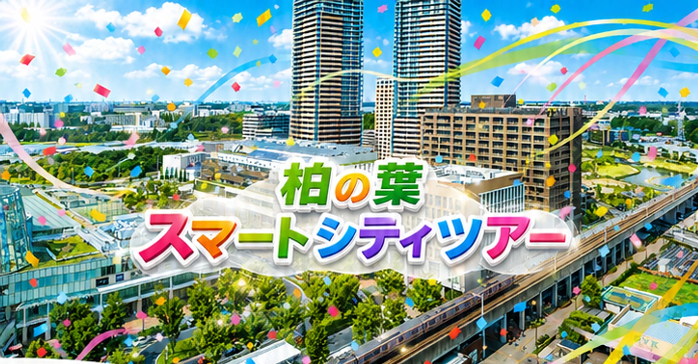
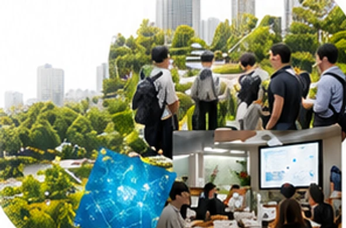
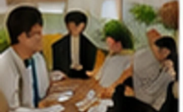
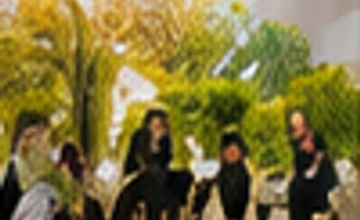

主な実証実験
440件柏の葉スマートシティツアー +Onツアー

+Onツアー
視察から始まる、
柏の葉スマートシティ
視察から始まる、
アイデアをカタチに。
世界に誇るソリューションと先進技術が、人や街、ワーク&ライフ、企業やアーバンモビリティ、デザインや暮らしを豊かにする街。 現地での気づきを、次の事業や共創につながる対話へ変えていきます。

柏の葉スマートシティ実績
協業・連携数
775社拠点数（公民学）
約80拠点来街者・入居者
約28.9万人+Onツアーとは
街の中で、実際に見て、聞いて、対話するプログラム。
実際にソリューション、アイデアが息づく街の中を体験するプログラムをワンストップで設計。 視察できるように、目的に合わせてご案内します。
ご案内の流れ（例）
- お問い合わせ
- ヒアリング・目的の確認
- 視察プランのご提案
- 当日視察実施
ヒアリング
- 視察目的のヒアリング
- 訪問先のピックアップ
- 視察オプションの選定
- 見積り・マッチング
こんな方におすすめのご案内
目的に合わせた視察と対話を設計します。
柏の葉スマートシティのソリューションやアイデアを見たい・知りたい・体験したい・検討したい方へ。
担当者
関係者
教育関係者
推進担当者
+Onツアーで体験できること
未来の暮らしを支える仕組みを、見て・聞いて・体験。
産学公民で生み出されたイノベーションを、視察当日の体験から次の検討材料へつなげます。
- 01お問い合わせ
- 02ヒアリング
プランご提案 - 03プラン策定・調整
- 04視察当日
- 05ツアー後フォロー
アンケート - 06コンサルティング
サポート
視察プラン一覧
テーマから選べる6つのコース
初回の入門視察から、環境・モビリティ・DXまで、目的に合わせて組み合わせできます。

スマートシティ
入門コース
入門コース
はじめての方向けに、柏の葉スマートシティの全体像をつかみたい方に。

環境・エネルギー
コース
コース
脱炭素・エネルギー先進事例を学びたい方に。

まちづくり・モビリティ
コース
コース
都市デザインや移動の革新事例を体感したい方に。

ヘルスケア・
ウェルビーイングコース
ウェルビーイングコース
健康・医療やウェルビーイングの実装事例を見たい方に。

イノベーション
コース
コース
共創、研究開発、スタートアップ連携を検討したい方に。

イノベーション・
DXコース
DXコース
DX・共創・データ活用の最前線を見たい方に。
代表プロフィール
柏田 邦夫
柏の葉スマートシティ パートナー
+Onツアー・ナビゲーター
柏の葉スマートシティのパートナーとして、多くの企業・自治体・大学の視察や共創プロジェクトを担当。 現地での観察や問いに合わせた最適な視察体験をご案内します。
企業での経歴プロフィール
技術と事業をつなぐ、現場起点のファシリテーション。
- パナソニック コネクトにて公式エバンジェリストとして活動
- 認証機・センシング・スマートシティ領域の情報発信を担当
- 展示会、セミナー、顧客向け視察・研修で多数登壇
- 企業・自治体・大学との共創ワークショップや新規事業対話を支援
- 技術をわかりやすく翻訳し、現場と事業をつなぐファシリテーター
まずは気軽にお問い合わせください
目的やご希望に合わせた最適な視察プランをご提案します。
よくあるご質問
お問い合わせ後、目的や参加人数をヒアリングし、訪問先候補と当日の流れをご提案します。内容確定後に視察実施となります。
新規事業検討、自治体施策の参考、研究・教育、DX推進、共創先探索など、目的に合わせてテーマを調整できます。
テーマや時期に応じて、街区、共創拠点、研究・実証関連施設、ワークショップ会場などから候補を組み合わせます。
標準は半日程度を想定しています。短時間の概要視察から、対話やワークショップを含む長めの設計まで相談できます。
参加人数、訪問先、講師・ワークショップの有無により変わります。ヒアリング後に個別にお見積りします。
お問い合わせ、ヒアリング、プラン提案、日程・訪問先調整、実施、フォローの順に進みます。希望日がある場合は早めの相談がおすすめです。